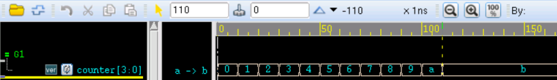

キーワード：while, for, repeat, forever
Verilog のループ文には4つのタイプがあり、それぞれ while、for、repeat、forever ループです。ループ文は always または initial ブロック内でのみ使用できますが、遅延式を含めることができます。
while ループ
while ループの構文は次のとおりです：
while (condition) begin
…
end
while ループの終了条件は、condition が偽になることです。
while ループの実行開始時に condition がすでに偽である場合、ループ文は一度も実行されません。
もちろん、実行文が1つだけの場合は、キーワード begin と end を省略できます。
次のコードを実行すると、counter は11回実行されます。
例
module test ;
reg [3:0] counter ;
initial begin
counter = 'b0 ;
while (counter<=10) begin
#10 ;
counter = counter + 1'b1 ;
end
end
//stop the simulation
always begin
#10 ; if ($time >= 1000) $finish ;
end
endmodule
シミュレーション結果は次のとおりです：

for ループ
for ループの構文は次のとおりです：
for(initial_assignment; condition ; step_assignment) begin
…
end
initial_assignment は初期条件です。
condition は終了条件であり、condition が偽になると、すぐにループを抜けます。
step_assignment は制御変数を変更する手続き的代入文であり、通常はループ変数のカウントを増減させます。
一般に、初期条件やインクリメント操作などが for ループ内に含まれているため、for ループの書き方は while ループよりも簡潔ですが、すべての場合に for ループで while ループを置き換えられるわけではありません。
次の for ループの例は、while ループの例と同じ効果を実現します。注意すべき点は、i = i + 1 を C 言語のように i++ と書くことはできず、i = i -1 も i -- と書くことはできないことです。
例
integer i ;
reg [3:0] counter2 ;
initial begin
counter2 = 'b0 ;
for (i=0; i<=10; i=i+1) begin
#10 ;
counter2 = counter2 + 1'b1 ;
end
end
repeat ループ
repeat ループの構文は次のとおりです：
repeat (loop_times) begin
…
end
repeat の機能は、固定回数のループを実行することです。while ループのように論理式を使用してループを続行するかどうかを決定することはできません。repeat ループの回数は、定数、変数、または信号でなければなりません。ループ回数が変数信号の場合、ループ回数は repeat ループの実行開始時の変数信号の値になります。実行中にループ回数を表す変数信号の値が変化しても、repeat の実行回数は変わりません。
次の repeat ループの例は、while ループの例と同じ効果を実現します。
例
reg [3:0] counter3 ;
initial begin
counter3 = 'b0 ;
repeat (11) begin // 11回繰り返す
#10 ;
counter3 = counter3 + 1'b1 ;
end
end
次の repeat ループの例は、8個のデータを連続して格納する機能を実現します：
例
j = 0 ;
if (!rstn) begin
repeat (8) begin
buffer[j] <= 'b0 ; // 遅延のない代入、つまり同時に0を代入
j = j + 1 ;
end
end
else if (enable) begin
repeat (8) begin
@(posedge clk) buffer[j] <= counter3 ; // 次の clk の立ち上がりエッジで代入
j = j + 1 ;
end
end
end
シミュレーション結果は次の図のとおりです。
図からわかるように、rstn がハイになると、buffer の8つのベクトルは同時に0が代入されます。
2番目のクロックサイクル後、buffer は counter3 によって順番に代入され、8個のデータを連続して格納する機能を実現します。

forever ループ
forever ループの構文は次のとおりです：
forever begin
…
end
forever 文は永久ループを表し、条件式を一切含みません。一度実行されると無限に実行され続け、システム関数 $finish で forever を終了できます。
forever は while(1) に相当します。
通常、forever ループはタイミング制御構造と組み合わせて使用されます。
例えば、forever 文を使用してクロックを生成します：
例
initial begin
clk = 0 ;
forever begin
clk = ~clk ;
#5 ;
end
end
例えば、forever 文を使用して、クロックエッジで制御されるレジスタ間データ転送機能を実現します：
例
reg data_in, data_temp ;
initial begin
forever @(posedge clk) data_temp = data_in ;
end